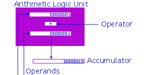

Module B - Computations
Expressions
Choose an appropriate data type for each variable in a program, based on
knowledge of the features required of the variable and the internal
representation of the available data type
"Errors using inadequate data are much less than those using no data at all." (Charles Babbage)
Arithmetic |
In-Class Problem |
Statistics |
Relational |
Logical |
Shorthand
Mixing Data Types |
Casting |
Precedence |
Exercises
A simple expression consists of an operator and operand(s).
A compound expression consists of several operators and several operands.
The operands may be variables, constants and/or other expressions.
Any expression evaluates to a single value, to which we may refer on
the right side of an assignment.
The compiler translates all expressions into sets of simple
instructions that the Arithmetic Logic Unit (ALU) can process.
The ALU can only evaluate the simplest expression that
consist of an operator and one or two operands.
If there are two operands, they must be of identical
data type.
The ALU receives the operator from the Control Unit.
The operator may be
- arithmetic,
- relational or
- logical.
The operands are data values stored in the
registers. The ALU places the result
of the operation in the accumulator (the AX register).
The data type of the result is the data type of the operand(s)
of the operation.

Compilers break our compound
expressions into sets of simpler expressions using
the rules of precedence (see below).
Arithmetic Expressions
Integral Data Types
The int and char data types
accept 5 binary and 2 unary arithmetic operators.
Here, the term binary refers to two operands, not to binary representation.
Binary
The binary arithmetic operators for integral data types
are addition, subtraction, multiplication, division
and remainder. The form of a binary arithmetic
expression is
| Arithmetic Expression | Meaning |
| variable, constant or expr | + | variable, constant or expr | plus |
| variable, constant or expr | - | variable, constant or expr | minus |
| variable, constant or expr | * | variable, constant or expr | multiplied by |
| variable, constant or expr | / | variable, constant or expr | divided by |
| variable, constant or expr | % | variable, constant or expr | rem of ?/? |
The division operator { / } yields a
truncated integer result.
That is, division of one integer by another yields
the whole value without the remainder.
For the remainder from an integer division, we
use the modulus operator, %.
Consider a room full of 1034 people to be divided into groups
of 10:
1034 / 10 /* yields 103 groups of 10 */
1034 % 10 /* yields 4 people left over */
|
Unary
The unary arithmetic operators for integral data types
are identity and negation.
The form of a unary arithmetic expression is
| Arithmetic Expression | Meaning |
| + | variable, constant or expr | preserve the sign |
| - | variable, constant or expr | change the sign |
The minus operator reverses the sign of the variable, constant or expression. The plus
operator leaves the variable, constant or expression
unchanged (and is present in the C language primarily
for symmetry). For example,
- if velocity has a value of -45, then -velocity has a value of 45;
- if velocity has a value of -45, then +velocity has a value of -45;
- if velocity*5 has a value of -225, then -velocity*5 has a value of 225;
- if velocity*5 has a value of -225, then +velocity*5 has a value of -225;
Floating-point Data Types
The float and double
data types accept 4 binary and 2 unary arithmetic operators.
Binary
The binary arithmetic operators for floating-point data
types are addition, subtraction,
multiplication and division. The form of a binary arithmetic
expression is
| Arithmetic Expression | Meaning |
| variable, constant or expr | + | variable, constant or expr | plus |
| variable, constant or expr | - | variable, constant or expr | minus |
| variable, constant or expr | * | variable, constant or expr | multiplied by |
| variable, constant or expr | / | variable, constant or expr | divided by |
The division operator { / } yields a
floating-point result.
Floating-point data types do not admit a remainder
operation.
Unary
The unary operators for floating-point data types
are identity and negation.
The form of a unary arithmetic expression is
| Arithmetic Expression | Meaning |
| + | variable, constant or expr | preserve the sign |
| - | variable, constant or expr | change the sign |
The minus operator reverses the sign of the variable, constant or expression. The plus
operator leaves the variable, constant or expression unchanged (and is present in the C language primarily for reasons of
symmetry).
In-Class Problem
Let us write a short program to
/* Playing with Arithmetic Expressions
* limits.c
* BTP100
* Jan 21 2005
*/
main() {
int intRight, intLeft, intResult;
double fptRight, fptLeft, fptResult;
/* Input */
printf("Enter an integer : ");
scanf("%d", &intLeft);
printf("Enter an integer : ");
scanf("%d", &intRight);
printf("Enter a floating-point number : ");
scanf("%lf", &fptLeft);
printf("Enter a floating-point number : ");
scanf("%lf", &fptRight);
/* Evaluations */
intResult = intLeft * intRight;
fptResult = fptLeft * fptRight;
/* Output */
printf("%d * %d = %d\n", intLeft, intRight, intResult);
printf("%le * %le = %le\n", fptLeft, fptRight, fptResult);
}
|
Try some very small numbers. Try some very large numbers.
When does this program give incorrect results? Why?
Statistics
Here are some timing statistics for different
platforms for 100M operations.
| Operation |
Borland 5.5 XP Pentium III |
.net 13.00 XP Pentium III |
cc AIX 4 RS/6000 |
| int + int |
260 | 590 | 2500 |
| int - int |
180 | 571 | 2520 |
| int * int |
271 | 641 | 2560 |
| int / int |
280 | 3235 | 9230 |
| int % int |
180 | 3244 | 9130 |
| double + double |
1252 | 1803 | 2430 |
| double - double |
1262 | 1813 | 2630 |
| double * double |
1442 | 1942 | 2560 |
| double / double |
4416 | 4377 | 2480 |
Note that division typically uses more resources.
To avoid division, we multiply by 0.5 rather than
divide by 2.0. Moreover, we prefer integral
operations to floating-point ones.
Relational Expressions
Relational expressions
compare values and represent conditions with a true or false result.
Each primitive data type admits 6 relational operators for
comparing values of that data type to other values of the
same data type.
The form of a relational expression is
| Relational Expression | Meaning |
| variable, constant or expr | == | variable, constant or expr | equal to |
| variable, constant or expr | > | variable, constant or expr | greater than |
| variable, constant or expr | >= | variable, constant or expr | greater than or equal to |
| variable, constant or expr | < | variable, constant or expr | less than |
| variable, constant or expr | <= | variable, constant or expr | less than or equal to |
| variable, constant or expr | != | variable, constant or expr | not equal to |
The equality operator == compares
left and right operands for identity. This operator
is distinct from the assignment operator =,
which assigns the value of the right operand to
the left operand.
The result of a relational expression is a true or false value.
The C language interprets the value zero as false and any
other value as true.
For example,
/* Relational Expressions
* relational.c
* BTP100
* Jan 21 2005
*/
main( ) {
int age, childTicket, seniorTicket;
printf("What is your age ? ");
scanf("%d", &age);
childTicket = age <= 12;
seniorTicket = age >= 65;
printf("You need a child Ticket (1 for yes, 0 for no) : %d\n", childTicket);
printf("You need a senior Ticket (1 for yes, 0 for no) : %d\n", seniorTicket);
}
|
Logical Expressions
Logical expressions compare conditions and yield true or false results.
We use logical operators to express compound conditions.
The C language has 2 binary logical operators
and 1 unary operator.
The form of a logical expression is
| Compound Expression | Meaning | Comment |
| condition | && | condition | and | not to be confused with & |
| condition | || | condition | or | not to be confused with | |
| | ! | condition | not | the opposite of |
For example,
/* Logical Expressions
* logical.c
* BTP100
* Jan 21 2005
*/
main( ) {
int age, atSchool, childTicket, studentTicket, adultTicket, seniorTicket;
printf("What is your age ? ");
scanf("%d", &age);
printf("Are you at school (1 for yes, 0 for no) ? ");
scanf("%d", &atSchool);
childTicket = age <= 12;
studentTicket = age > 12 && age <= 19 && atSchool == 1;
seniorTicket = age >= 65;
adultTicket = !childTicket && !studentTicket && !seniorTicket;
printf("You need a child Ticket (1 for yes, 0 for no) : %d\n", childTicket);
printf("You need a student Ticket (1 for yes, 0 for no) : %d\n", studentTicket);
printf("You need a senior Ticket (1 for yes, 0 for no) : %d\n", seniorTicket);
printf("You need an adult Ticket (1 for yes, 0 for no) : %d\n", adultTicket);
}
|
Consider the condition for an adultTicket.
This condition is logically identical to
adultTicket = ! ( childTicket || studentTicket || seniorTicket );
|
This is an example of deMorgan's law which states that
the opposite of a compound condition is the compound condition with all
sub-conditions reversed, all &&'s changed to ||'s and all ||'s to &&'s.
Augustus deMorgan
was Ada Lovelace's tutor and a family friend. Ada Lovelace
wrote the first computer program in 1842.
So, we can write
/* Logical Expressions
* deMorgan.c
* BTP100
* Jan 21 2005
*/
main( ) {
int age, atSchool, childTicket, studentTicket, adultTicket, seniorTicket;
printf("What is your age ? ");
scanf("%d", &age);
printf("Are you at school (1 for yes, 0 for no) ? ");
scanf("%d", &atSchool);
childTicket = age <= 12;
studentTicket = age > 12 && age <= 21 && atSchool == 1;
seniorTicket = age >= 65;
adultTicket = adultTicket = ! ( childTicket || studentTicket || seniorTicket );
printf("You need a child Ticket (1 for yes, 0 for no) : %d\n", childTicket);
printf("You need a student Ticket (1 for yes, 0 for no) : %d\n", studentTicket);
printf("You need a senior Ticket (1 for yes, 0 for no) : %d\n", seniorTicket);
printf("You need an adult Ticket (1 for yes, 0 for no) : %d\n", adultTicket);
}
|
Shorthand Assignment Operators
The C language includes a set of shorthand assignment operators, which
combine arithmetic expressions with assignments.
We use these operators to simplify our coding.
Integral Data Types
The int and char data types
have 5 binary and 2 unary shorthand assignment operators.
Binary
The following binary shorthand expressions yield the same result
as the longhand expressions listed alongside:
| Operator | Shorthand | Longhand |
Meaning |
| += | age += 4 | age = age + 4 | add 4 to age |
| -= | age -= 4 | age = age - 4 | subtract 4 from age |
| *= | age *= 4 | age = age * 4 | multiply age by 4 |
| /= | age /= 4 | age = age / 4 | divide age by 4 |
| %= | age %= 4 | age = age % 4 | remainder after age/4 |
Unary
The following unary shorthand expressions yield the same result
as the longhand expressions listed alongside:
| Operator | Shorthand | Longhand |
Meaning |
| ++ | age++ or ++age | age = age + 1 | increment age by 1 |
| -- | age-- or --age | age = age - 1 | decrement age by 1 |
The pre-fix operator precedes its operand while the post-fix
operator succeeds its operand.
The pre-fix operator changes the value of the operand
before the value is used, while the post-fix operator
changes the value of the operand after the
value has been used.
Floating-point Data Types
The float and double data types
have 4 binary and 2 unary shorthand assignment operators.
Each operator combines an arithmetic operation with an assignment operation
in a more compact form.
Binary
The following binary shorthand expressions yield the
same result as the longhand expression listed alongside:
| Operator | Shorthand | Longhand |
Meaning |
| += | fare += 4.0 | fare = fare + 4.0 | add 4.0 to fare |
| -= | fare -= 4.0 | fare = fare - 4.0 | subtract 4.0 from fare |
| *= | fare *= 4.0 | fare = fare * 4.0 | multiply fare by 4.0 |
| /= | fare /= 4.0 | fare = fare / 4.0 | divide fare by 4.0 |
Unary
The following unary shorthand expressions yield the same
result as the longhand expressions listed alongside:
| Operator | Shorthand | Longhand |
Meaning |
| ++ | fare++ or ++fare | fare = fare + 1.0 | increment fare by 1 |
| -- | fare-- or --fare | fare = fare - 1.0 | decrement fare by 1 |
The pre-fix operator precedes its operand, while the post-fix operator
succeeds its operand.
The pre-fix operator changes the value of the operand
before the value is used, while the post-fix operators
change the value of the operand after the original value
has been used.
Caution
We avoid using the pre/post-fix operators wherever there
is the slightest chance of ambiguity.
Consider the following statements,
int herAge = 5, hisAge;
hisAge = 5 + herAge++; /* hisAge has a value of 10 and herAge a value of 6 */
...
int herAge = 5, hisAge;
hisAge = ++herAge + 5; /* hisAge has a value of 11 and herAge a value of 6 */
|
These statements are unambiguous. However, consider
int herAge = 5, hisAge;
hisAge = 5 + herAge++ + herAge;
|
Here, the value of the second herAge depends
upon the compiler. One compiler may increment the first
herAge before the second addition, while
another compiler may increment the first herAge
after the second addition. The C language only stipulates that the
value must be incremented before the semi-colon.
It is best to decompose any ambiguous expression into several statements for clarity
hisAge = 5 + herAge++; /* increment herAge before adding herAge 2nd time */
hisAge += herAge;
hisAge = 5 + herAge; /* add herAge before incrementing herAge */
hisAge += herAge++;
|
Mixing Data Types
Although the ALU does not perform operations on operands of
differing data type directly, C compilers can interpret
expressions that contain operands of differing data type.
If a binary expression contains operands of differing type,
a C compiler changes the data type of one of the
operands to match the other.
The compiler uses the following data type hierarchy:
| double | higher |
| float | ... |
| long | ... |
| int | ... |
| char | lower |
Assignment Expressions
If the data type of the variable on the left side of
an assignment operator differs from the data type of
the right side operand, the compiler
- promotes the right operand to the data type of
the left operand if the left operand is of a higher data type
than the right operand,
- truncates the right operand to the data type of
the left operand if the left operand is of a lower data type
than the right operand.
For example,
/* Promotion with Assignment Operators
* promotion.c
* BTP100
* Jan 21 2005
*/
main( ) {
int loonies;
double money;
printf("How many loonies do you have ? ");
scanf("%d", &loonies);
money = loonies;
printf("You have $%.2lf\n", money);
}
|
How many loonies do you have ? 23
You have $23.00
|
Alternatively,
/* Truncation with Assignment Operators
* truncation.c
* BTP100
* Jan 21 2005
*/
main( ) {
int loonies;
double money;
printf("How much money do you have ? ");
scanf("%lf", &money);
loonies = money;
printf("You have %d loonies.\n", loonies);
}
|
How much money do you have ? 23.45
You have 23 loonies.
|
Arithmetic and Relational Expressions
If the operands in an arithmetic or relational expression
differ in data type, the compiler promotes the value of
lower data type to a value of higher data type before
implementing the operation.
| |
right operand |
| left operand |
double | float | int | char | long |
| double |
double |
double |
double |
double |
double |
| float |
double |
float |
float |
float |
float |
| int |
double |
float |
int |
int |
long |
| char |
double |
float |
int |
int |
long |
| long |
double |
float |
long |
long |
long |
| |
Data Type of Promoted Operand |
For example,
1034 * 10 yields 10340 an int result
1034 * 10.0 yields 10340.0 a double result
1034 * 10L yields 10340L a long result
1034 * 10.f yields 10340.0f a float result
|
The precise promotion rules are:
- if either operand is long double, convert the other operand to long double
- otherwise, if either operand is double, convert the other operand to double
- otherwise, if either operand is float, convert the other operand to float
- otherwise, convert char and short to int
- then, if either operand is long, convert the other operand to long.
Casting
We may temporarily change the data type of any operand
in any expression to obtain a result of a certain data
type.
To change the data type of any constant or variable, we
preceding the constant or variable with the desired data type
enclosed within parentheses. This is called casting.
The form of a cast is
| Cast Expression | Meaning |
| ( double ) | variable or constant | double version of |
| ( float ) | variable or constant | float version of |
| ( int ) | variable or constant | int version of |
| ( char ) | variable or constant | char version of |
| ( long ) | variable or constant | long version of |
For example
/* Casting to a Floating-Point Value
* castToDouble.c
* BTP100
* Jan 21 2005
*/
main( ) {
int pies, persons;
double piesPerPerson;
printf("How many pies do you have ? ");
scanf("%d", &pies);
printf("How many persons are there ? ");
scanf("%d", &persons);
piesPerPerson = (double) pies / persons;
printf("Each person receives %.2lf pies.\n",
piesPerPerson);
}
|
How many pies do you have ? 8
How many persons are there ? 6
Each person receives 1.33 pies.
|
The result of the division here is a
double and the assignment
places a double result (1.333333) into piesPerPerson.
Another example
/* Casting to an Integral Value
* castToInt.c
* BTP100
* Jan 21 2005
*/
main( ) {
int twoonies;
double money;
printf("How much money do you have ? ");
scanf("%lf", &money);
twoonies = (int) money / 2;
printf("I'll give you %d twoonies + change.\n",
twoonies);
}
|
How much money do you have ? 8.33
I'll give you 4 twoonies + change.
|
twoonies will
contain 4, because (int)money/2
is an integer division.
Note, however, that
piesPerPerson = (double) (pies / persons); /* Warning - this
preserves the integer division */
|
places 1.0 into piesPerPerson,
not 1.333333. Here, the result of the integer
division and not pies itself
is cast to a double.
Precedence
The rules of
precedence define the order in which a compiler must
decompose a compound expression. The compiler
evaluates the first operation with the operator that
has highest precedence.
The operators, from highest to lowest precedence, and
their direction of evaluation are as follows:
| Operator | Evaluate From |
| ++ -- (post) | left to right |
| ++ -- (pre) + - & ! (all unary) | right to left |
| (data type) | right to left |
| * / % | left to right |
| + - | left to right |
| < <= > >= | left to right |
| == != | left to right |
| && | left to right |
| || | left to right |
| = += -= *= /= %= | right to left |
We use ( ) to instruct the
compiler to evalute the expression within the parentheses
first.
For example,
2 + 3 * 5 => 2 + 15 => 17
( 2 + 3 ) * 5 => 5 * 5 => 25
|
Exercises
- Complete workshop 2 on Conversions, and
- Read pages 14-19, 62 from Evan Weaver's subject notes.
|